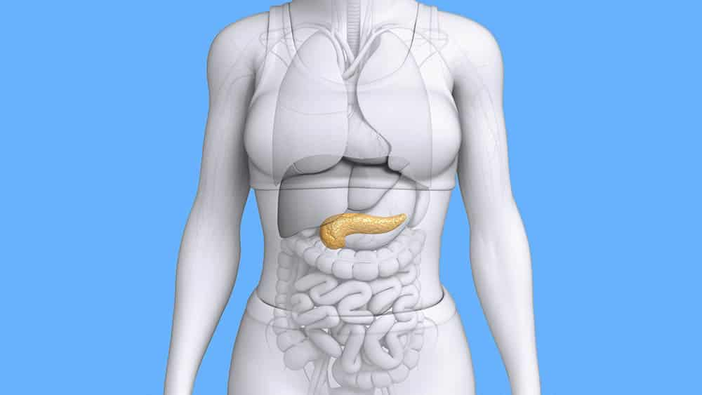

| Home | |
| Esta pagina web te será de mucha utilidad para encontrar la información necesaria sobre el páncreas. Al lado izquierdo podras enontrar un menú de opciones con las características del órgano para trasplantes, las técnica utilizada para su fabricación, los beneficios y propuestas de mejora para el trasplante. |  |